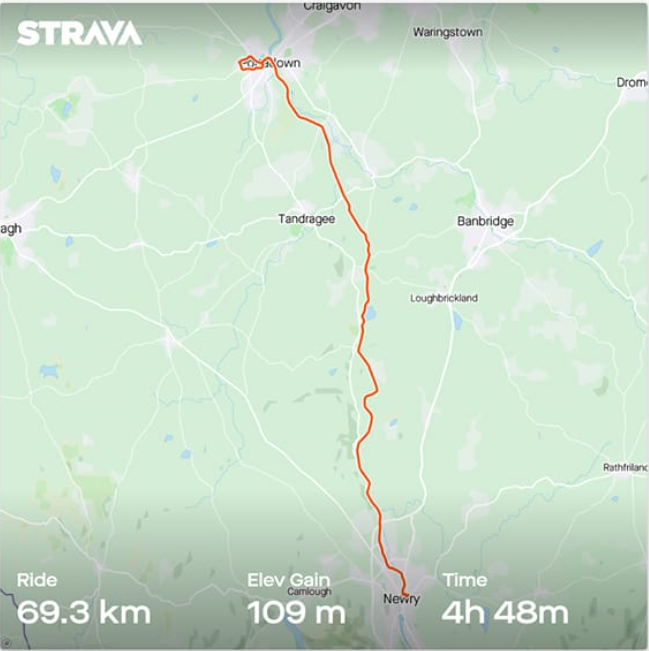
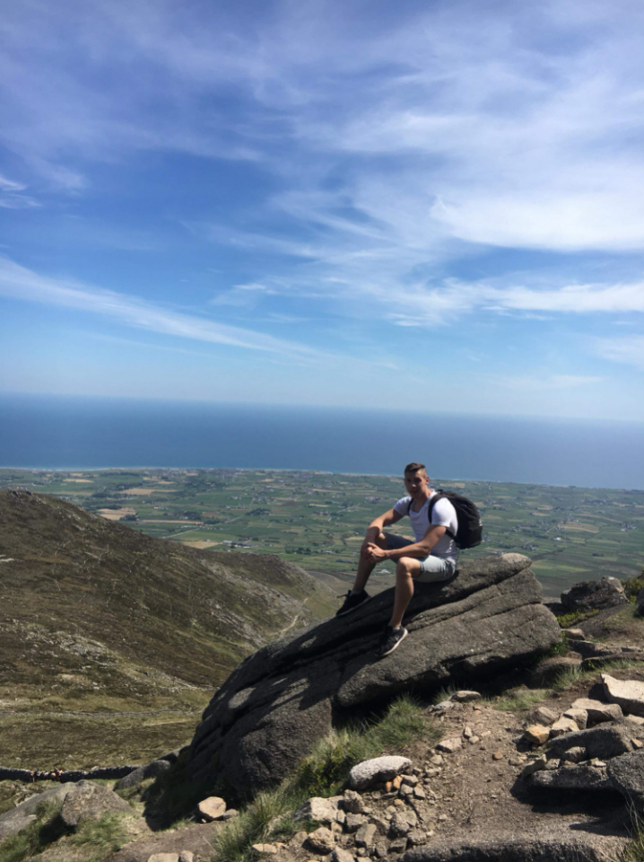
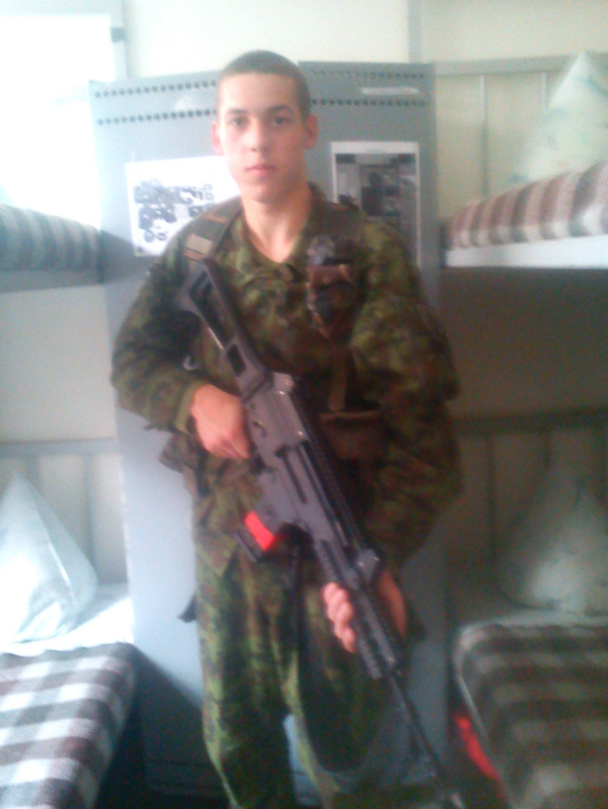

Mano vardas Laimontas man 29 metai Trumpai papasakosiu ka veikiau ar vis dar veikiu gyvenime.
  Pries 8 metus Sugalvojau kad noriu isbandyti kario profesija ilgai negalvojas uzsirasiau i Bazinius karinius mokymus 3 menesiams. Buvo smagu bet testi po kurso nenorejau.
Pauglysteje labai pamegau sporta viskas prasidejo nuo "Turniko" tada seke svoriai,kovos menai, dviraciai visada stengiuosi butu aktyvus